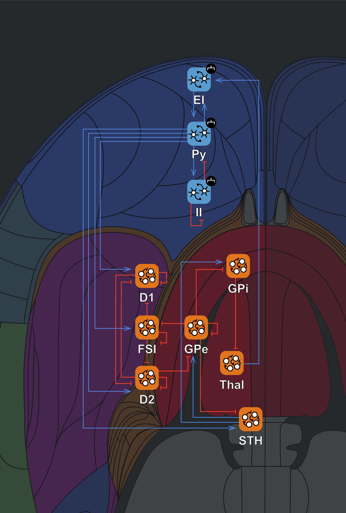

Building a model of the Basal Ganglia using Neural Mass models
In this example, we will construct a model of Parkinson's disease using Jansen-Rit neural mass models, based on the work of Liu et al. (2020) [1]. More generally, this tutorial shows how to build a simple version of the cortico-basal ganglia-thalamocortical neural loop, including both the direct and indirect pathways. In this tutorial, we will specifically cover:
- How to create a Jansen-Rit neural mass model in Neuroblox
- How to create blocks with different default sets of parameters
- Using symbolic hyperparameters during graph definition
- Extracting specific solutions states for plotting time series data
- Remaking an $ODEProblem$ without needing to recompile an entire $ODESystem$
- Plotting basic spectrograms of simulations
The Jansen-Rit Neural Mass Model
The Jansen-Rit model [2] is another popular neural mass model that, like the Wilson-Cowan model from the Getting Started, describes the average activity of neural populations. This resource is a good general introduction to the Jansen-Rit model if you'd like to read more. Each Jansen-Rit unit is defined by the following differential equations:
\[\begin{align*} \frac{dx}{dt} &= y-\frac{2}{\tau}x \\[10pt] \frac{dy}{dt} &= -\frac{x}{\tau^2} + \frac{H}{\tau} \left[2\lambda S(\textstyle\sum{jcn}) - \lambda\right] \end{align*}\]
where $x$ represents the average postsynaptic membrane potential of the neural population, $y$ is an auxiliary variable, $\tau$ is the membrane time constant, $H$ is the maximum postsynaptic potential amplitude, $\lambda$ determines the maximum firing rate, and $\sum{jcn}$ represents the sum of all synaptic inputs to the population. The sigmoid function $S(x)$ models the population's firing rate response to input and is defined as:
\[S(x) = \frac{1}{1 + \text{exp}(-rx)}\]
where $r$ controls the steepness of the sigmoid, affecting the population's sensitivity to input.
This model consists of four main components:
- A cortical column consisting of pyramidal cells $PY$, an excitatory interneuron population $EI$, and an inhibitory interneuron population $II$
- A striatal network consisting of two populations of medium spiny neurons, $D1$ and $D2$ (named for the different dopamine receptors), and fast-spiking interneurons $FSI$
- Subcortical structures including the subthalamic nucleus $STN$, the external segment of the globus pallidus $GPE$, and the internal segment of the globus pallidus $GPI$
- A thalamic oscillator $Th$
The connections between these oscillators are shown in the Neuroblox GUI below (blue = excitatory, red = inhibitory connections): 
Setting Up the Model
We're now going to set up this model using code. Let's start by importing the necessary libraries and defining our neural masses:
using Neuroblox
using OrdinaryDiffEq
using CairoMakieThe original paper uses parameters in seconds, but all models in Neuroblox have milliseconds as their time unit. We therefore specify a scaling factor to use the paramters from the paper:
τ_factor = 1000; ## Convert time units from seconds to millisecondsNow we'll setup the neural masses. The values are all taken from the original paper [1], Table 1. Notice that some of these neural masses have the default Neuroblox parameters (e.g., $PY$ uses default cortical parameters, so the user can simply specify $cortical=true$ to access these). If you want to see the full list of defaults for the Jansen-Rit model, you can type $?Jansen-Rit$ in your Julia REPL to view the docstring.
# Create the cortical oscillators
@named PY = JansenRit(cortical=true) ## default parameters cortical Jansen Rit blox
@named EI = JansenRit(τ=0.01*τ_factor, H=20/τ_factor, λ=5, r=5)
@named II = JansenRit(τ=2.0*τ_factor, H=60/τ_factor, λ=5, r=5)
# Create the striatal oscillators
@named D1 = JansenRit(τ=0.0022*τ_factor, H=20/τ_factor, λ=300, r=0.3)
@named D2 = JansenRit(τ=0.0022*τ_factor, H=20/τ_factor, λ=300, r=0.3)
@named FSI = JansenRit(τ=0.0022*τ_factor, H=20/τ_factor, λ=300, r=0.3)
# Create the remaining subcortical oscillators
@named STN = JansenRit(τ=0.01*τ_factor, H=20/τ_factor, λ=500, r=0.1)
@named GPE = JansenRit(cortical=false) ## default parameters subcortical Jansen Rit blox
@named GPI = JansenRit(cortical=false) ## default parameters subcortical Jansen Rit blox
@named Th = JansenRit(τ=0.002*τ_factor, H=10/τ_factor, λ=20, r=5);Building the Circuit
Now, let's create a graph representing our brain circuit. The nodes on this graph are the neural mass models defined aboe and the edges are the connections between the nodes based on the known anatomy of the basal ganglia-thalamocortical circuit. We define the connection weights as specified in Table 2 of [1], and the signs (excitatory vs inhibitory) based on the connections in Figure 1. Note that Julia can use any unicode character as a variable name, so we can use arrows in the names of the weights. If you're typing these from scratch, you can access these by typing $\rightarrow$. For more examples, check out the Julia documentation. We also use the $@parameters$ macro to define the common connection parameters, which we can then use to define the connections. This is a macro from ModelingToolkit in Julia, which you should look at if you want to build more general models.
g = MetaDiGraph() ## define an empty graph
params = @parameters C_Cor=3 C_BGTh=3 C_Cor➡BGTh=9.75 C_BGTh➡Cor=9.75 ## define common connection parameters using healthy parameter range
# Create connections
# thalamocortical connection
add_edge!(g, Th => EI; weight = C_BGTh➡Cor)
# remaining cortical → subcortical connections
add_edge!(g, PY => STN; weight = C_Cor➡BGTh)
add_edge!(g, PY => D1; weight = C_BGTh➡Cor)
add_edge!(g, PY => D2; weight = C_BGTh➡Cor)
add_edge!(g, PY => FSI; weight = C_BGTh➡Cor)
# basal ganglia ↔ thalamus connections
add_edge!(g, STN => GPE; weight = C_BGTh)
add_edge!(g, STN => GPI; weight = C_BGTh)
add_edge!(g, GPE => STN; weight = -0.5*C_BGTh)
add_edge!(g, GPE => GPE; weight = -0.5*C_BGTh)
add_edge!(g, GPE => GPI; weight = -0.5*C_BGTh)
add_edge!(g, GPE => FSI; weight = -0.5*C_BGTh)
add_edge!(g, FSI => D1; weight = -0.5*C_BGTh)
add_edge!(g, FSI => D2; weight = -0.5*C_BGTh)
add_edge!(g, FSI => FSI; weight = -0.5*C_BGTh)
add_edge!(g, D1 => D1; weight = -0.5*C_BGTh)
add_edge!(g, D1 => D2; weight = -0.5*C_BGTh)
add_edge!(g, D1 => GPI; weight = -0.5*C_BGTh)
add_edge!(g, D2 => D2; weight = -0.5*C_BGTh)
add_edge!(g, D2 => D1; weight = -0.5*C_BGTh)
add_edge!(g, D2 => GPE; weight = -0.5*C_BGTh)
add_edge!(g, GPI => Th; weight = -0.5*C_BGTh)
# corticocortical connections
add_edge!(g, PY => EI; weight = 6*C_Cor)
add_edge!(g, PY => II; weight = 1.5*C_Cor)
add_edge!(g, EI => PY; weight = 4.8*C_Cor)
add_edge!(g, II => PY; weight = -1.5*C_Cor)
add_edge!(g, II => II; weight = -3.3*C_Cor);Creating the Model
Let's build the complete model:
@named final_system = system_from_graph(g);This creates a differential equations system from our graph representation using ModelingToolkit and symbolically simplifies it for efficient computation.
Simulating the Model
Lastly, we create the $ODEProblem$for our system, select an algorithm, in this caseTsit5()` (see discussion in the previous tutorial about solver choices if you're interested), and simulate 1 second of brain activity.
sim_dur = 1000.0 ## Simulate for 1 second
prob = ODEProblem(final_system, [], (0.0, sim_dur)) ## Create the problem to solve
sol = solve(prob, Tsit5(), saveat=0.1); ## Solve the problem and save every 0.1msVisualizing the results
Let's interrogate the solution to see what we have. For the purposes of this tutorial, we'll focus on the striatal oscillations. In this simple model, we should see relatively sharp on/off transitions in the striatal populations. To test this, let's use Symbolic Indexing to access the states we're interested in: the $y$ state of the D1 neuron population.
idx_func = ModelingToolkit.getu(sol, D1.odesystem.y); ## gets the state index of the D1 neuron population in the solution objectNow use this indexing function to plot the solution in a Makie plot (read more about Makie in the docs).
fig = Figure() ## create the figure
ax = Axis(fig[1, 1], xlabel="Time (ms)", ylabel="y voltage (arbitrary units)", title="D1 population membrane voltage") ## define one axis for the figure
lines!(ax, sol.t, idx_func(sol), color = :blue) ## plot the time series of the D1 neuron population
display(fig) ## display the figureCairoMakie.Screen{IMAGE}
Great! The striatum is oscillating. A Parkinson's model is better evaluated in the frequency domain, so let's lengthen the simulation now and plot a spectrogram. To do this, we'll use the $remake$ function to create a new $ODEProblem$ with a longer simulation time without rebuilding the entire system.
sim_dur = 10000.0 ## Simulate for 10 seconds
prob = remake(prob, tspan = (0.0, sim_dur)) ## Remake the ODEProblem with the new simulation time
sol = solve(prob, Tsit5(), saveat=0.1); ## Solve the new problemLet's use this new solution to plot the power spectrum of the D1 neuron population. This is using a built-in Neuroblox function $powerspectrumplot$ that's discussed at length in the next tutorial, so we won't delve into the details of the arguments here.
powerspectrumplot(D1, sol, state = "y", ## specify the block to plot, the solution object, and the state of the block to plot
method = welch_pgram, window = hanning, ylims = (1e-6, 1e6), ## additional parameters to make the plot pretty
alpha_label_position = (8.5, 1e5),
beta_label_position = (22, 1e5),
gamma_label_position = (60, 1e5),
title="D1 Population Power Spectrum")You should see two prominent β-band peaks: one in low β (around 15 Hz) and one in high β (around 35 Hz). You should also see their resonances in the γ-band.
Further Exploration
You might be wondering: what about Parkinson's in this model? Well, like all good things, that is left as an exercise for the reader. Following the original paper, try replacing the original parameters with Parkinson's versions, so that $C_Cor=60$, $C_BGTh=60$, $C_Cor➡BGTh=5$, and $C_BGTh➡Cor=5$. If you just change these values, you should see the D1 population have a dramatic increase in β power at the lower frequency peak and a complete loss of the higher frequency peak. We've selected the plotting parameters so you can use the same plotting call above to see this difference - so no excuse not to run this on your own! If you're inspired to continue experimenting, here are a couple other ideas:
- Try looking at the $PY$ population under normal and Parkinson's conditions. Hint: you'll need to adjust the $ylims$ of the power spectrum to fully appreciate the changes.
- Try changing the lengths of the simulation and the sampling frequency. How does this affect the power spectrum?
References
[1] Liu, C, Zhou, C, Wang, J, Fietkiewicz, C, & Loparo, KA. (2020). The role of coupling connections in a model of the cortico-basal ganglia-thalamocortical neural loop for the generation of beta oscillations. Neural Networks, 123, 381-392. DOI: 10.1016/j.neunet.2019.12.021 [2] Jansen BH, Rit VG. Electroencephalogram and visual evoked potential generation in a mathematical model of coupled cortical columns. Biol Cybern. 1995 Sep;73(4):357-66. DOI: 10.1007/BF00199471.
This page was generated using Literate.jl.